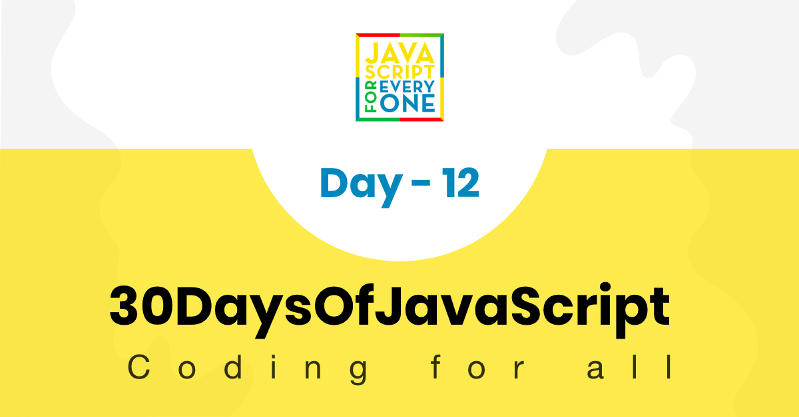

A regular expression or RegExp is a small programming language that helps to find pattern in data. A RegExp can be used to check if some pattern exists in a different data types. To use RegExp in JavaScript either we use RegExp constructor or we can declare a RegExp pattern using two forward slashes followed by a flag. We can create a pattern in two ways.
To declare a string we use a single quote, double quote a backtick to declare a regular expression we use two forward slashes and an optional flag. The flag could be g, i, m, s, u or y.
A regular expression takes two parameters. One required search pattern and an optional flag.
A pattern could be a text or any form of pattern which some sort of similarity. For instance the word spam in an email could be a pattern we are interested to look for in an email or a phone number format number might be our interest to look for.
Flags are optional parameters in a regular expression which determine the type of searching. Let us see some of the flags:
Declaring regular expression without global flag and case insensitive flag.
// without flag
let pattern = 'love'
let regEx = new RegExp(pattern)
Declaring regular expression with global flag and case insensitive flag.
let pattern = 'love'
let flag = 'gi'
let regEx = new RegExp(pattern, flag)
Declaring a regex pattern using RegExp object. Writing the pattern and the flag inside the RegExp constructor
let regEx = new RegExp('love','gi')
Declaring regular expression with global flag and case insensitive flag.
let regEx= /love/gi
The above regular expression is the same as the one which we created with RegExp constructor
let regEx= new RegExp('love','gi')
Let us see some of RegExp methods
test():Tests for a match in a string. It returns true or false.
const str = 'I love JavaScript'
const pattern = /love/
const result = pattern.test(str)
console.log(result)
true
match():Returns an array containing all of the matches, including capturing groups, or null if no match is found. If we do not use a global flag, match() returns an array containing the pattern, index, input and group.
const str = 'I love JavaScript'
const pattern = /love/
const result = str.match(pattern)
console.log(result)
["love", index: 2, input: "I love JavaScript", groups: undefined]
const str = 'I love JavaScript'
const pattern = /love/g
const result = str.match(pattern)
console.log(result)
["love"]
search(): Tests for a match in a string. It returns the index of the match, or -1 if the search fails.
const str = 'I love JavaScript'
const pattern = /love/g
const result = str.search(pattern)
console.log(result)
2
replace(): Executes a search for a match in a string, and replaces the matched substring with a replacement substring.
const txt = 'Python is the most beautiful language that a human begin has ever created.\
I recommend python for a first programming language'
matchReplaced = txt.replace(/Python|python/, 'JavaScript')
console.log(matchReplaced)
JavaScript is the most beautiful language that a human begin has ever created.I recommend python for a first programming language
const txt = 'Python is the most beautiful language that a human begin has ever created.\
I recommend python for a first programming language'
matchReplaced = txt.replace(/Python|python/g, 'JavaScript')
console.log(matchReplaced)
JavaScript is the most beautiful language that a human begin has ever created.I recommend JavaScript for a first programming language
const txt = 'Python is the most beautiful language that a human begin has ever created.\
I recommend python for a first programming language'
matchReplaced = txt.replace(/Python/gi, 'JavaScript')
console.log(matchReplaced)
JavaScript is the most beautiful language that a human begin has ever created.I recommend JavaScript for a first programming language
const txt = '%I a%m te%%a%%che%r% a%n%d %% I l%o%ve te%ach%ing.\
T%he%re i%s n%o%th%ing as m%ore r%ewarding a%s e%duc%at%i%ng a%n%d e%m%p%ow%er%ing \
p%e%o%ple.\
I fo%und te%a%ching m%ore i%n%t%er%%es%ting t%h%an any other %jobs.\
D%o%es thi%s m%ot%iv%a%te %y%o%u to b%e a t%e%a%cher.'
matches = txt.replace(/%/g, '')
console.log(matches)
I am teacher and I love teaching.There is nothing as more rewarding as educating and empowering people.I found teaching more interesting than any other jobs.Does this motivate you to be a teacher.
Let's use example to clarify the above meta characters
Let's use square bracket to include lower and upper case
const pattern = '[Aa]pple' // this square bracket means either A or a
const txt = 'Apple and banana are fruits. An old cliche says an apple a day keeps the doctor way has been replaced by a banana a day keeps the doctor far far away. '
const matches = txt.match(pattern)
console.log(matches)
["Apple", index: 0, input: "Apple and banana are fruits. An old cliche says an apple a day keeps the doctor way has been replaced by a banana a day keeps the doctor far far away.", groups: undefined]
const pattern = /[Aa]pple/g // this square bracket means either A or a
const txt = 'Apple and banana are fruits. An old cliche says an apple a day a doctor way has been replaced by a banana a day keeps the doctor far far away. '
const matches = txt.match(pattern)
console.log(matches)
["Apple", "apple"]
If we want to look for the banana, we write the pattern as follows:
const pattern = /[Aa]pple|[Bb]anana/g // this square bracket mean either A or a
const txt = 'Apple and banana are fruits. An old cliche says an apple a day a doctor way has been replaced by a banana a day keeps the doctor far far away. Banana is easy to eat too.'
const matches = txt.match(pattern)
console.log(matches)
["Apple", "banana", "apple", "banana", "Banana"]
Using the square bracket and or operator , we manage to extract Apple, apple, Banana and banana.
const pattern = /\d/g // d is a special character which means digits
const txt = 'This regular expression example was made in January 12, 2020.'
const matches = txt. match(pattern)
console.log(matches) // ["1", "2", "2", "0", "2", "0"], this is not what we want
const pattern = /\d+/g // d is a special character which means digits
const txt = 'This regular expression example was made in January 12, 2020.'
const matches = txt. match(pattern)
console.log(matches) // ["12", "2020"], this is not what we want
const pattern = /\d+/g // d is a special character which means digits
const txt = 'This regular expression example was made in January 12, 2020.'
const matches = txt. match(pattern)
console.log(matches) // ["12", "2020"], this is not what we want
const pattern = /[a]./g // this square bracket means a and . means any character except new line
const txt = 'Apple and banana are fruits'
const matches = txt.match(pattern)
console.log(matches) // ["an", "an", "an", "a ", "ar"]
const pattern = /[a].+/g // . any character, + any character one or more times
const txt = 'Apple and banana are fruits'
const matches = txt.match(pattern)
console.log(matches) // ['and banana are fruits']
Zero or many times. The pattern may not occur or it can occur many times.
const pattern = /[a].*/g //. any character, + any character one or more times
const txt = 'Apple and banana are fruits'
const matches = txt.match(pattern)
console.log(matches) // ['and banana are fruits']
Zero or one times. The pattern may not occur or it may occur once.
const txt = 'I am not sure if there is a convention how to write the word e-mail.\
Some people write it email others may write it as Email or E-mail.'
const pattern = /[Ee]-?mail/g // ? means optional
matches = txt.match(pattern)
console.log(matches) // ["e-mail", "email", "Email", "E-mail"]
We can specify the length of the substring we look for in a text, using a curly bracket. Let us see, how ot use RegExp quantifiers. Imagine, we are interested in substring that their length are 4 characters
const txt = 'This regular expression example was made in December 6, 2019.'
const pattern = /\\b\w{4}\b/g // exactly four character words
const matches = txt.match(pattern)
console.log(matches) //['This', 'made', '2019']
const txt = 'This regular expression example was made in December 6, 2019.'
const pattern = /\b[a-zA-Z]{4}\b/g // exactly four character words without numbers
const matches = txt.match(pattern)
console.log(matches) //['This', 'made']
const txt = 'This regular expression example was made in December 6, 2019.'
const pattern = /\d{4}/g // a number and exactly four digits
const matches = txt.match(pattern)
console.log(matches) // ['2019']
const txt = 'This regular expression example was made in December 6, 2019.'
const pattern = /\d{1,4}/g // 1 to 4
const matches = txt.match(pattern)
console.log(matches) // ['6', '2019']
const txt = 'This regular expression example was made in December 6, 2019.'
const pattern = /^This/ // ^ means starts with
const matches = txt.match(pattern)
console.log(matches) // ['This']
const txt = 'This regular expression example was made in December 6, 2019.'
const pattern = /[^A-Za-z,. ]+/g // ^ in set character means negation, not A to Z, not a to z, no space, no comma no period
const matches = txt.match(pattern)
console.log(matches) // ["6", "2019"]
It should have ^ starting and $ which is an end.
let pattern = /^[A-Z][a-z]{3,12}$/;
let name = 'Asabeneh';
let result = pattern.test(name)
console.log(result) // true
🌕 You are going far. Keep going! Now, you are super charged with the power of regular expression. You have the power to extract and clean any kind of text and you can make meaning out of unstructured data. You have just completed day 12 challenges and you are 12 steps a head in to your way to greatness. Now do some exercises for your brain and for your muscle.
points = ['-1', '2', '-4', '-3', '-1', '0', '4', '8']
sortedPoints = [-4, -3, -1, -1, 0, 2, 4, 8]
distance = 12
Write a pattern which identify if a string is a valid JavaScript variable
is_valid_variable('first_name') # True
is_valid_variable('first-name') # False
is_valid_variable('1first_name') # False
is_valid_variable('firstname') # True
Write a function called tenMostFrequentWords which get the ten most frequent word from a string?
paragraph = `I love teaching. If you do not love teaching what else can you love. I love Python if you do not love something which can give you all the capabilities to develop an application what else can you love.`
console.log(tenMostFrequentWords(paragraph))
[
{word:'love', count:6},
{word:'you', count:5},
{word:'can', count:3},
{word:'what', count:2},
{word:'teaching', count:2},
{word:'not', count:2},
{word:'else', count:2},
{word:'do', count:2},
{word:'I', count:2},
{word:'which', count:1},
{word:'to', count:1},
{word:'the', count:1},
{word:'something', count:1},
{word:'if', count:1},
{word:'give', count:1},
{word:'develop',count:1},
{word:'capabilities',count:1},
{word:'application', count:1},
{word:'an',count:1},
{word:'all',count:1},
{word:'Python',count:1},
{word:'If',count:1}]
console.log(tenMostFrequentWords(paragraph, 10))
[{word:'love', count:6},
{word:'you', count:5},
{word:'can', count:3},
{word:'what', count:2},
{word:'teaching', count:2},
{word:'not', count:2},
{word:'else', count:2},
{word:'do', count:2},
{word:'I', count:2},
{word:'which', count:1}
]
sentence = `%I $am@% a %tea@cher%, &and& I lo%#ve %tea@ching%;. There $is nothing; &as& mo@re rewarding as educa@ting &and& @emp%o@wering peo@ple. ;I found tea@ching m%o@re interesting tha@n any other %jo@bs. %Do@es thi%s mo@tivate yo@u to be a tea@cher!?`
console.log(cleanText(sentence))
I am a teacher and I love teaching There is nothing as more rewarding as educating and empowering people I found teaching more interesting than any other jobs Does this motivate you to be a teacher
```
2. Write a function which find the most frequent words. After cleaning, count three most frequent words in the string.
```js
console.log(mostFrequentWords(cleanedText))
[{word:'I', count:3}, {word:'teaching', count:2}, {word:'teacher', count:2}]
🎉 CONGRATULATIONS ! 🎉